SceneBanana — 原版 vs. 增强版(我们的贡献)
文本 → 图像(gpt-image-2)→ 度量级 3D 场景。在 3 个生成房间上对比。
原版 = SceneBanana 长方体原型管线(仅几何)。增强版(我们的) 增加了:
GeoGround(VGGT 图像→度量 3D)
SupportGraph 支撑图
PhysPropertyNet(质量/摩擦)
PhysRepair
非穿透投影
SAM 掩膜足迹
CLIP 外观检索
Sim2Sim(Drake+MuJoCo 审计)
真实 HSSD 网格 + Cycles 全局光
校验失败越少、跨仿真器分歧越小越好;Sim2Sim 稳定性越高越好。
增强管线还能恢复原版缺失的支撑关系与逐物体物理属性。
与 SceneSmith 头对头 — 相同提示词、相同 HSSD 网格,用我们的指标审计
SceneSmith(智能体式 户型 + 家具 管线)在相同提示词
"一间卧室:一张床、一个带台灯的床头柜、一个抽屉柜" 上端到端运行,检索 真实 HSSD 网格,
在 两种智能体 LLM 上各跑一遍 —— 开源模型(Qwen)与前沿模型(GPT-4o,代表公平的最佳情形)。
我们把每个布置好的场景载入自己的 schema,用完全相同的 SimReadyBench / Sim2Sim / 物理检查来审计。
我们的贡献是一层 仿真就绪层(SupportGraph + PhysPropertyNet + yaw 感知非穿透投影),
能把任意已布置场景变成物理有效、仿真稳定的场景。
A. GPT-4o 智能体 — 公平最佳情形(校验器开启,不绕过)
在 GPT-4o 上资产校验器工作正常(正确接受真实的床/抽屉柜网格),所以 SceneSmith 能干净地布置房间,
摆放合理、基本轴对齐。但它仍残留一处重叠(一个旋转约 100° 的抽屉柜压到床)且 没有物理属性;
我们的层消除重叠并接地质量/摩擦。仅仅为了让 GPT-4o 完成布置,就得修两个稳定性 bug:一个 1148 个不连通组件的
HSSD 网格把"碎片移除"步骤推到 263 GB 内存(被 OOM 杀掉),以及 Blender 的 glb→gltf 导出
把一张 2.2 m 的床塌缩成 0.05 mm 的薄片。即便如此,GPT-4o 的智能体循环 46 分钟没收敛
(卡在反复检查家具朝向),凸显了智能体管线的不稳定性。
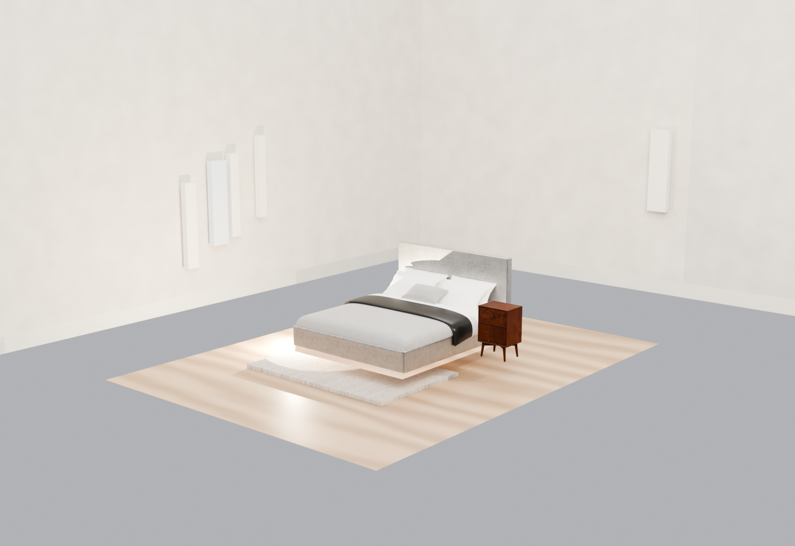
我们的 — 重建驱动摆放:每个物体的位置/坐落高度直接取自 VGGT 三维重建(台灯坐在床头柜上、挂画贴墙、无悬空)
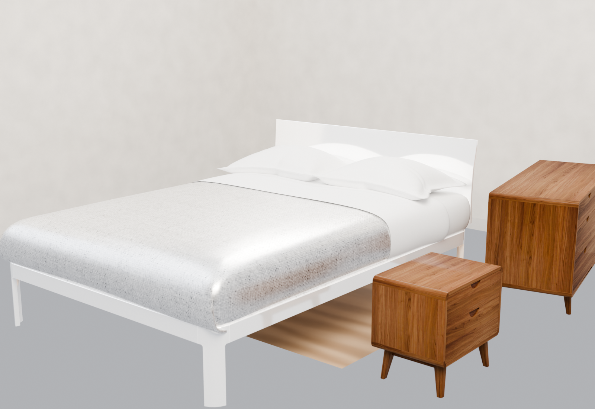
SceneSmith / GPT-4o — 文本→3D,相同 HSSD 网格,用我们的 Cycles 管线渲染(yaw 感知)
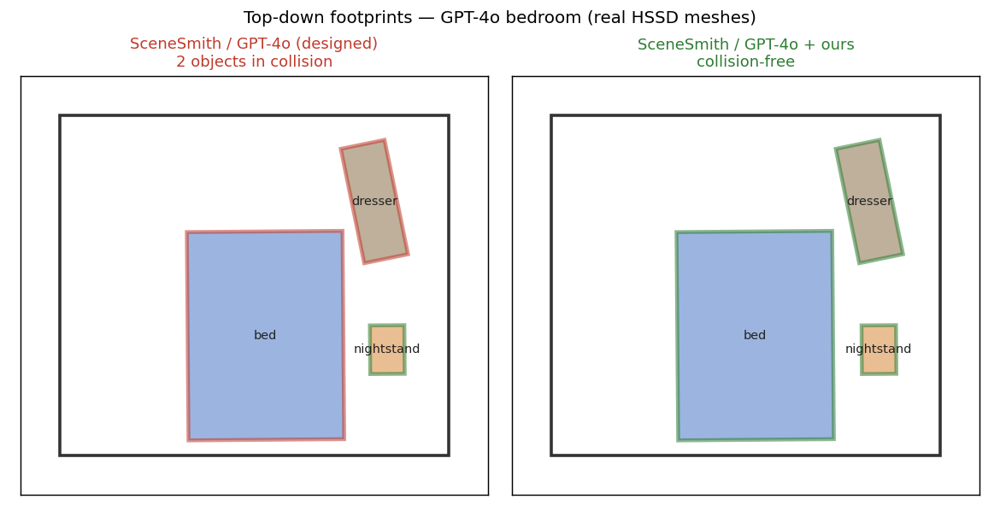
GPT-4o 布置的卧室(真实 HSSD 网格),俯视足迹。左:旋转的抽屉柜压到床(1 对重叠)。
右:我们的投影把它们分开;质量/摩擦已接地。
| 指标 | SceneSmith / GPT-4o
(布置结果) | + 我们的
(仿真就绪层) |
|---|
| 物体间重叠 ↓ | 1 | 0 |
| 校验失败 ↓ | 1 | 0 |
| 物理属性 | 无 常数 | 已估计 质量/摩擦 |
| Sim2Sim 稳定性 ↑ | 100% | 100% |
| Sim2Sim 分歧(m)↓ | 0.00 | 0.001 |
多房型(GPT-4o,N=3):结论跨房型成立
卧室 — 床、床头柜、抽屉柜
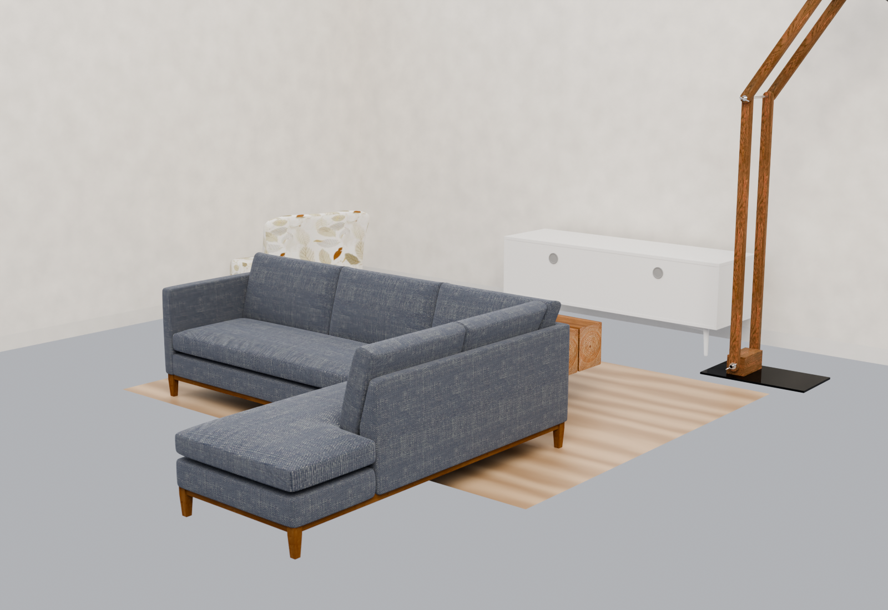
客厅 — 沙发、茶几、电视柜、落地灯(+椅、绿植)
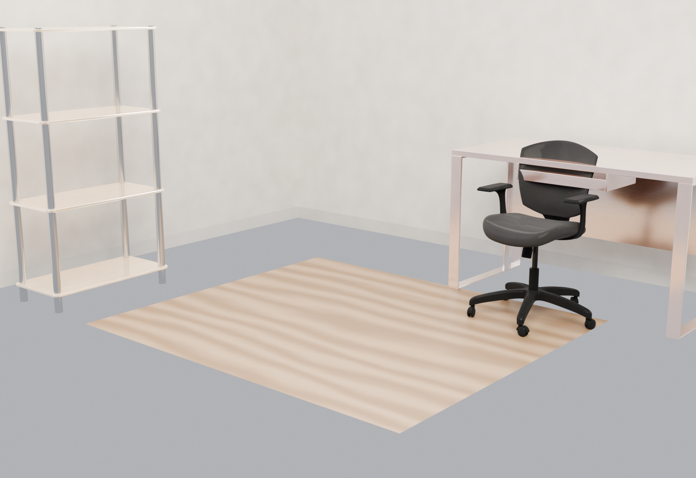
书房 — 书桌、办公椅、书架
| 房间(真实 HSSD 网格) | 重叠
SS → +我们 | 校验失败
SS → +我们 | 物理
SS → +我们 | Sim2Sim 稳定性
SS → +我们 |
|---|
| 卧室 | 1 → 0 | 1 → 0 | 无 → 已接地 | 100% → 100% |
| 客厅 | 1 → 0 | 1 → 0 | 无 → 已接地 | 83% → 100% |
| 书房 | 1 → 0 | 1 → 0 | 无 → 已接地 | 33% → 100% |
| 合计 / 均值 | 3 → 0 | 3 → 0 | 0/3 → 3/3 | 72% → 100% |
每个 SceneSmith / GPT-4o 房间都恰好带一处物体间重叠、一处校验失败、且无物理属性;
我们的仿真就绪层把三者全部修成物理有效、质量/摩擦接地、仿真稳定的场景。
上方渲染图是 SceneSmith 布置的场景(真实 HSSD 网格),经我们的 yaw 感知 Cycles 管线渲染。
B. Qwen 智能体 — 暴露两种失败模式
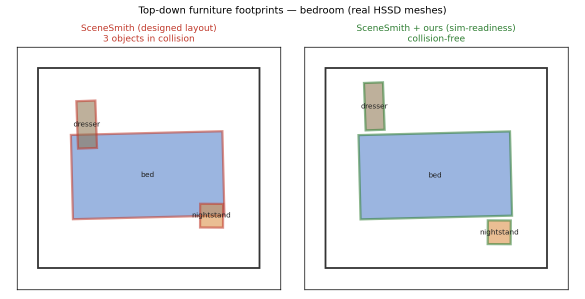
俯视足迹(真实 HSSD 网格)。左:SceneSmith 的布置 —— 旋转 90° 的床
同时穿插进抽屉柜和床头柜(3 个物体碰撞)。右:我们的 yaw 感知、质量加权投影把它们就地分开
(无碰撞);重床基本不动,较轻的物件移动。
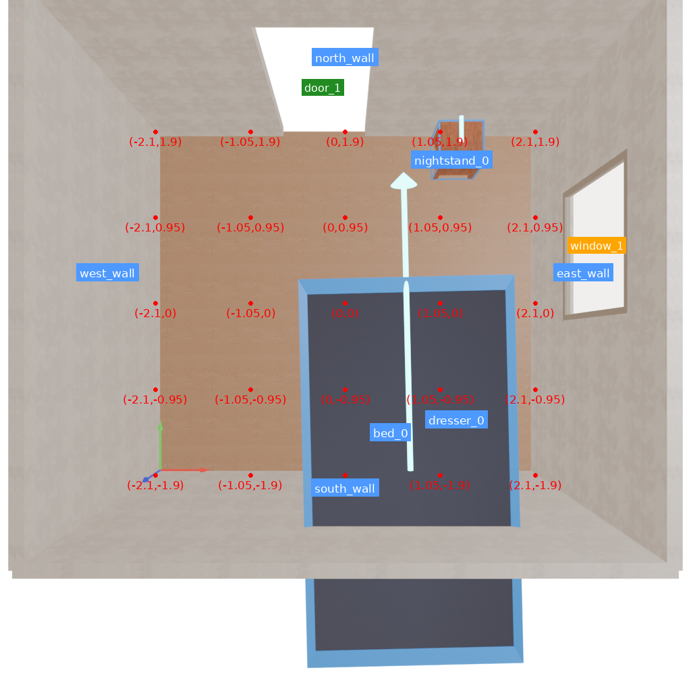
SceneSmith — 俯视(床旋转 90°,与床头柜和抽屉柜重叠)
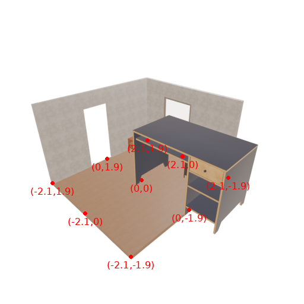
SceneSmith — 侧视(床挤进抽屉柜)
我们观察到的两种失败模式:
① 用 Qwen 作智能体 LLM 时,SceneSmith 的 VLM 资产校验器过度拒绝 每个检索到的网格
(把真实的床标成"衣柜")→ 交出一个 空房间,而它的 critic 仍打 10/10。
② 绕过校验后它能布置房间,但它 自带的非穿透投影崩溃,
把床甩到 z = −1103 m(飞出世界)。
| 指标 | SceneSmith
(布置结果) | SceneSmith
(经它自带投影后) | SceneSmith + 我们的
(仿真就绪层) |
|---|
| 物体间重叠 ↓ | 2 | 0 (床被甩飞) | 0 |
| 校验失败 ↓ | 2 | 4 | 0 |
| 物理属性 | 无 常数 | 无 常数 | 已估计 质量/摩擦 |
| Sim2Sim 稳定性 ↑ | 100% | 67% | 100% |
| Sim2Sim 分歧(m)↓ | 0.00 | 10273.0 床→虚空 | 0.001 |
SceneSmith 的投影"解决"重叠的方式只是 把床射出房间
(z=−1103 m,跨仿真器分歧 10 公里,稳定性 100%→67%)。给定相同的布置,
我们的 yaw 感知、质量加权 投影把旋转 90° 的床与床头柜、抽屉柜 就地 分开
(重叠 2→0,校验失败 2→0),接地逐物体质量/摩擦,并保持 Drake&MuJoCo 一致性 100%(0.001 m)。
SceneSmith 跑在 Qwen 通道 + HSSD 检索;其 VLM 校验器被绕过,房间才得以布置。
SupportGraph:显式化"什么压在什么上" — 扁平生成器丢掉的物理结构
可仿真的场景不只需要 3D 长方体 —— 还需要 支撑结构:哪个物体压在哪个面上。
SupportGraph 从几何(底部高度 + 足迹包含)推断它,把每个子物体绑定到父物体表面并加上 support_on 关系,
标记为 layer-1 可操作物。现在它支持 桌面和内部隔层,并排除墙物(床后面的窗帘不算"压在"床上)。
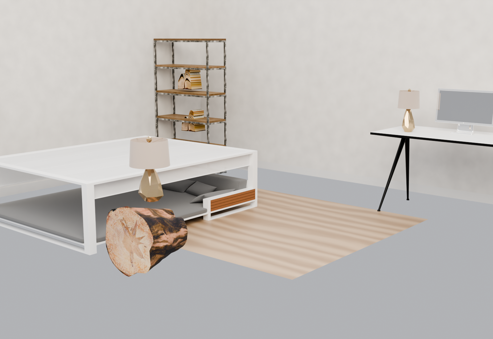
恢复出的分层场景(真实 HSSD 网格):书架隔层上的物品、桌面上的显示器。
恢复出的 support_on 关系(5 个):
• 台灯 → 床头柜顶面
• 显示器 → 桌面
• 桌面台灯 → 桌面
• 书 → 书架隔层(上)
• 书 → 书架隔层(下)
落地灯正确保持落地;窗帘不被绑定到床上。
| 情况 | 修复前 | 修复后 |
|---|
| 桌面上的灯(床头柜 / 书桌) | 检测到 | 检测到 |
| 书架 内部隔层 上的书 | 漏检 仅顶面 | 检测到(逐隔层表面) |
| 床后的窗帘 | 错误 support_on 床 错 | 已排除(墙物) |
| 落地灯 / 落地绿植 | 落地 | 落地 |
此前 SupportGraph 只建模物体的 顶 面(所以书架内部的书被漏掉),还会把墙物绑到邻近家具上。
两点都已修复;由 7 个单元测试覆盖。这正是让运行时的 relation_support_on /
support_surface_contains_child 检查通过、并让物理引擎消费者知道"灯会随床头柜一起移动"的关键。
法向分类器升级:在 bbox 启发式之上,一个网格模块读取每个支撑物的几何,把 朝上的水平面
聚类成真实支撑面 —— 例如恢复出一个 Parson 5 层书架的 5 个真实隔层高度(z=0.10/0.45/0.80/1.14/1.49 m)。
子物体随后绑定到 真实 表面,不存在表面处则被拒绝(漂浮在两层之间的书不算"被支撑")。
检索覆盖 也被拓宽,小物件(台灯/落地灯、显示器、书、花瓶、绿植…)现在能解析到正确的 HSSD 网格而非失败
—— 上图的灯和显示器都是真实检索到的资产。
开合可达性:抽屉/柜门真的打得开吗? — 看着没问题、却没法用的场景
一个场景可以通过碰撞 + 稳定性检查,却依然 没法用:抽屉柜塞进墙角、抽屉拉出来撞墙,或书桌抽屉正对着办公椅拉不开。
报告里"articulated 物体放置"这一缺口正是这个 —— 现有工作只 检索 articulated 资产,没人验证放好之后开合是否可达。
我们不依赖 PartNet-Mobility / ArtVIP 的 URDF(SceneSmith 因前者关节质量差而弃用),而是从类别 + 几何 参数化 建模:
每件储物家具的抽屉/柜门在正面扫出一块开合体积,我们检查它是否被其他物体或墙挡住,并通过移位修复。
这套检查同样能泛化到真实 URDF —— 那时关节轴/行程从 URDF 来,而不是类别先验。
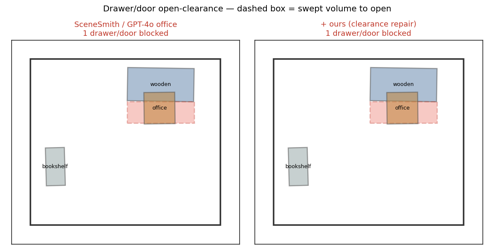
书房俯视图,虚线框 = 抽屉/柜门打开所需的扫掠体积。左:书桌抽屉(红框)被办公椅完全挡住(可开 0 m / 需 0.45 m)。
右:我们的间隙修复把书桌挪开,抽屉可完全打开(绿框)。
| 房间 | 受阻的抽屉/柜门
布置结果 → +修复 | 说明 |
|---|
| 卧室 | 2 → 1 | 床头柜抽屉修好;抽屉柜抽屉(0.5m)紧贴床,房间太小无法完全打开 —— 诚实保留 |
| 客厅 | 0 → 0 | 电视柜门有间隙 |
| 书房 | 1 → 0 | 书桌抽屉被办公椅 100% 挡住 → 移位后可开 |
| 合计 | 3 → 1 | 修复 2 处,1 处因房间过小诚实标记为不可修 |
这是"看着没问题、物理上却没法用"的真实失败:碰撞为零、能稳定站立,但抽屉拉不开。新增指标
开合无碰撞率。由 4 个单元测试覆盖(开合畅通 / 被物体挡住 / 撞墙 / 开放式书架无需间隙)。
诚实说明:正面方向用"背靠最近墙、朝向房间最开阔一侧"的启发式推断(我们的场景没有可靠的朝向轴);
极窄房间里的家具会被诚实标记为不可修,而非假装修好。
SimReadyBench:统一指标面板 — 语义分高、物理/可用性差的方法一眼现形
把所有信号汇成一张表:语义(物体数 CNT、越界 OOB、可导航自由面积 NAV、可接近率 REACH)、
物理/可用性(碰撞 COL、开合受阻 ARTblk、跨仿真器稳定性 STB、物理接地 PHYS)。
报告指出"高语义分但低物理/低可审计性"的方法需要这样的统一面板才能现形。这里把最强的智能体基线
SceneSmith(Qwen 与 GPT-4o 两个通道)和我们的完整仿真就绪层对比。
| 方法 / 房间 | CNT | OOB↓ | COL↓ | ARTblk↓ | NAV | REACH | STB↑ | PHYS |
|---|
| 卧室 · SceneSmith/Qwen | 3 | 0 | 2 | 2 | 0.52 | 1.0 | 1.0 | ✗ |
| 卧室 · SceneSmith/GPT-4o | 3 | 0 | 1 | 2 | 0.50 | 1.0 | 1.0 | ✗ |
| 卧室 · + 我们的 | 3 | 0 | 0 | 1 | 0.49 | 1.0 | 1.0 | ✓ |
| 客厅 · SceneSmith/GPT-4o | 6 | 0 | 1 | 0 | 0.49 | 1.0 | 0.83 | ✗ |
| 客厅 · + 我们的 | 6 | 0 | 0 | 0 | 0.49 | 1.0 | 1.0 | ✓ |
| 书房 · SceneSmith/GPT-4o | 3 | 0 | 1 | 1 | 0.75 | 1.0 | 0.33 | ✗ |
| 书房 · + 我们的 | 3 | 0 | 0 | 0 | 0.72 | 1.0 | 1.0 | ✓ |
读法:SceneSmith 在 语义层(CNT/OOB/NAV/REACH)都不错 —— 物体齐、不越界、能走动、能接近;
但在 物理/可用性层 普遍有碰撞(COL≥1)、抽屉/柜门打不开(ARTblk≥1)、无物理属性(PHYS ✗)、
跨仿真器稳定性不满(书房仅 33%)。我们的仿真就绪层在 不破坏语义 的前提下把这些全部补齐
(COL→0、ARTblk 大幅下降、PHYS→✓、STB→100%)。
诚实范围:外部布局基线(Holodeck/PhyScene/LayoutVLM 等)未在此跑 —— 需要各自的完整环境;
这里对比的是最强智能体基线 SceneSmith。审计四轴(provenance/replay/honesty/blocked)由 SimReadyBench 另行评估。
从生成图直接重建 vs. 网格拼装 — 为什么"像生成图"的正确做法是 VGGT 重建
本页其它渲染图用的是"检索 HSSD 网格 + 按包围盒摆进盒子房间"的合成方式 —— 它在朝向、台面高度、贴图上天然脆弱。
更好的路线(也是本项目核心 GeoGround):把一张 连贯的生成图 用 VGGT-Omega 直接重建成度量 3D,
几何与外观同源,自动避开上述问题。下面是实测。
A. 单图 → VGGT → 带贴图的 3D 网格(可行 ✓)
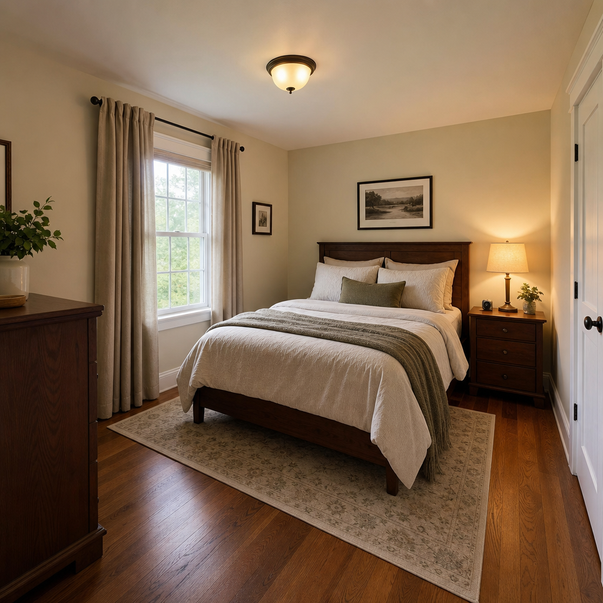
输入:gpt-image-2 卧室图
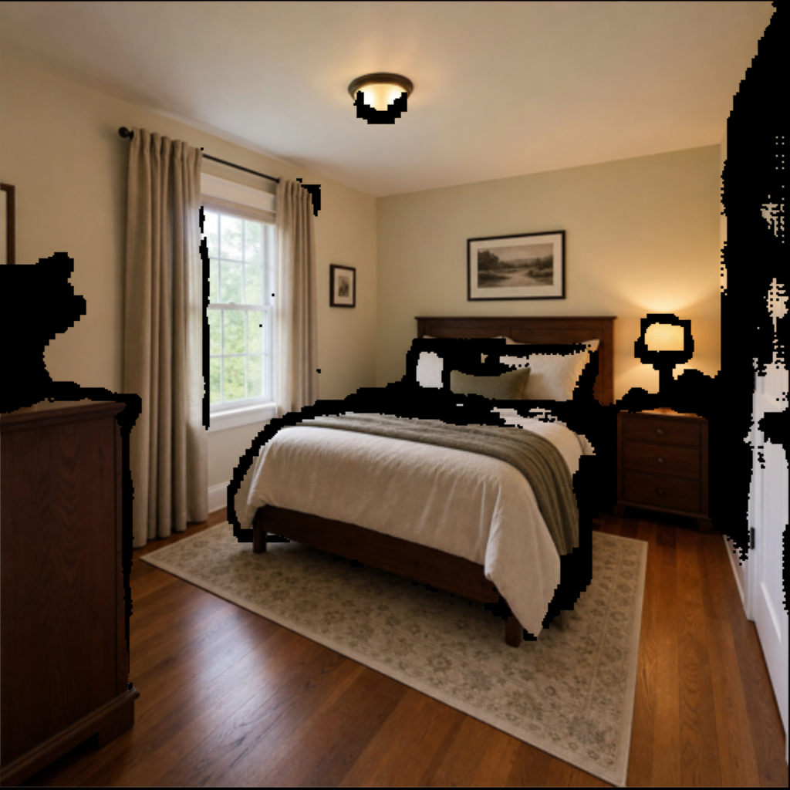
重建网格 · 原视角 —— 与生成图几乎一致(但已是真实 3D 几何)
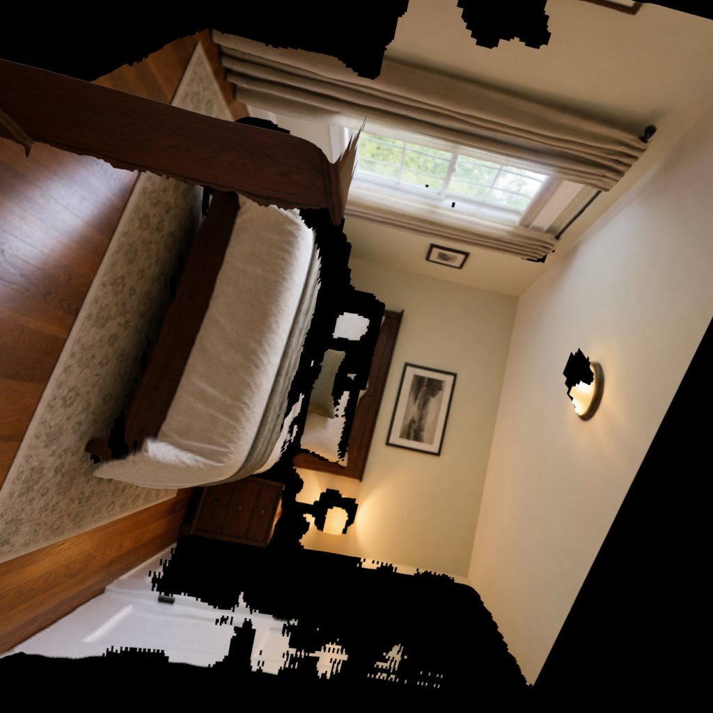
重建网格 · 转动视角 —— 暴露单视图 2.5D 局限(看不到处有空洞)
单图重建出的网格从原视角渲染 就是生成图的样子(236k 顶点 / 463k 面,无朝向/腾空/贴图问题);
只有当相机大幅转动时才露出单视图固有的 2.5D 空洞。
B. 让 gpt-image-2 一次出"4 个机位" → VGGT 多视图融合(不可行 ✗)
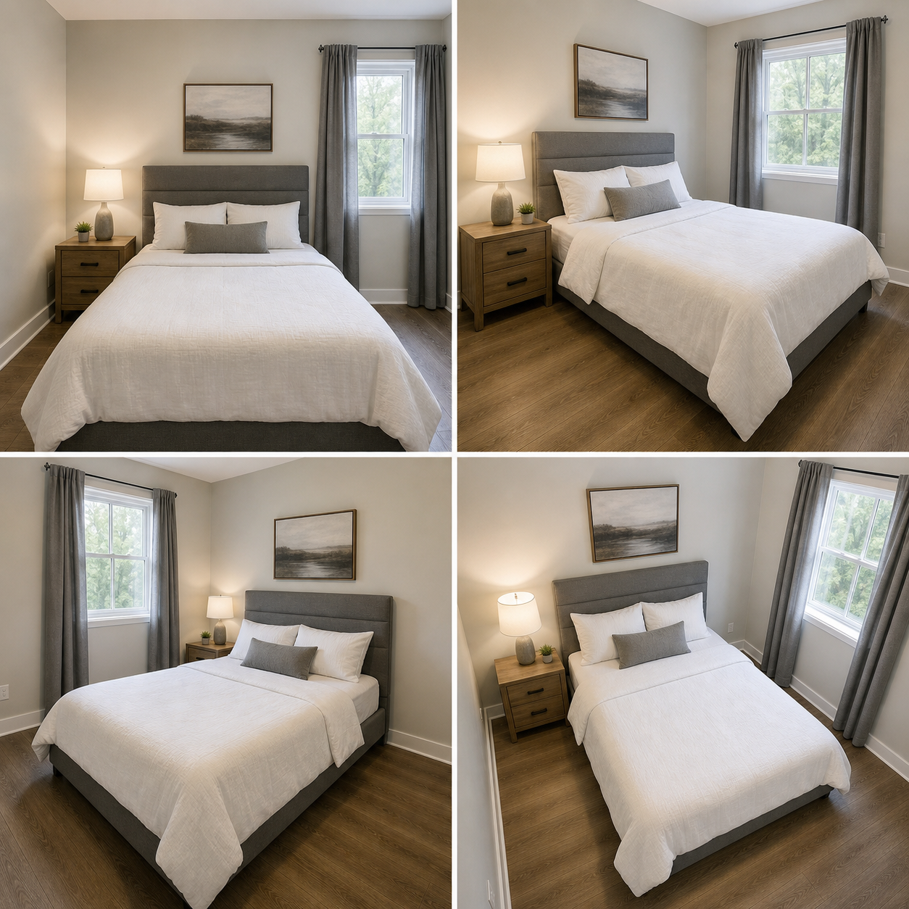
gpt-image-2 一次生成的"同一卧室 4 个角度" —— 风格很一致
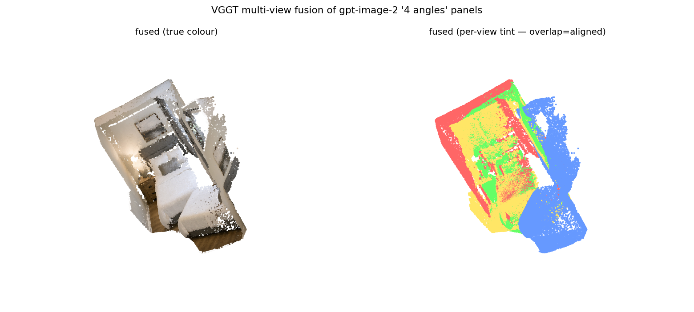
把 4 个面板喂给 VGGT 多视图融合 —— 左:真彩色已错位重影;右:按视图染色,4 色各自散开不重合
结论:gpt-image-2 的"多机位"风格一致但几何不刚性一致 —— 是各自幻想出的相似图,不是同一 3D 场景的多视图。
喂给 VGGT 后相机被硬塞到 0.26–0.6m 间距、点云错位(右图四色不重叠即证)。所以"文生图直出多机位再三维重建"这条路走不通。
C. 重建驱动的物体摆放 —— 把"重建"和"渲染"接起来
之前"检索网格拼装"的渲染和三维重建互不相关,所以物体悬空、台灯不坐在桌上。
正解:每个物体的位置、坐落高度、尺寸都直接取自它在 VGGT 重建里的度量包围盒(台灯的重建底=床头柜的重建顶 → 台灯就坐在床头柜上),
并把挂画/窗等贴到墙上、过滤噪声小物。下图三个房间的"我们的"渲染全部由此生成 —— 物体级、可分离/可仿真,且无悬空。
 卧室 —— 台灯坐在床头柜上、挂画贴墙
卧室 —— 台灯坐在床头柜上、挂画贴墙
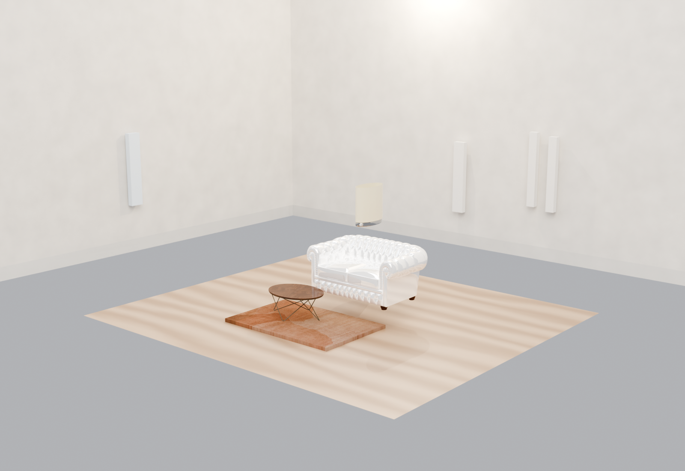
客厅 —— 沙发/茶几落地(原先悬空的台灯、木桩已消除)
 书房 —— 书架/办公椅落地
书房 —— 书架/办公椅落地
对比:稠密重建(A)最像生成图但有空洞、不可分离;重建驱动摆放(C)是干净的物体级场景、摆放从重建来、可直接做物理与仿真 —— 两者互补。
结论与建议:① 想要物体级、可仿真、摆放准确的场景 → 重建驱动摆放(C,本次实现,已设为主"Ours"渲染);
② 想要"最像生成图"的整图视觉 → 单图 VGGT 稠密重建(A);
③ 不要指望 gpt-image-2 直出一致多机位(B,已证伪);
④ 若要自由视角无空洞,再接一个 新视图合成(NVS) 模型补几个一致视角(后续工作)。
卧室 — 检测到 11 个物体(床、床头柜、抽屉柜、灯、窗、窗帘、地毯……)
 输入 — gpt-image-2
输入 — gpt-image-2
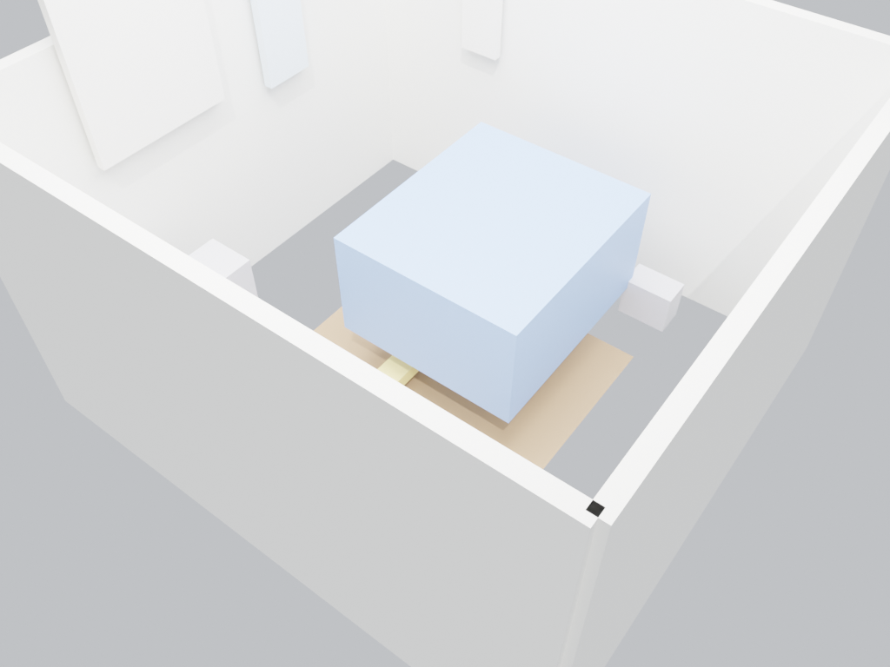
原版 — 长方体原型
增强版(我们的) — 重建驱动摆放(姿态取自 VGGT 3D,无悬空)
| 指标 | 原版 | 增强版(我们的) |
|---|
| 物体间重叠 ↓ | 9 | 0 |
| 校验失败 ↓ | 13 | 1 |
| 支撑关系 ↑ | 0 | 1 |
| 物理属性 | 无 常数 | 已估计 质量/摩擦 |
| 外观匹配资产 | 仅类别 | CLIP 图像↔名称 |
| Sim2Sim 稳定性 ↑ | 0% | 100% |
| Sim2Sim 分歧(m)↓ | 4.81 | 0.23 |
客厅 — 检测到 9 个物体(沙发、桌、地毯、灯、衣柜、窗……)
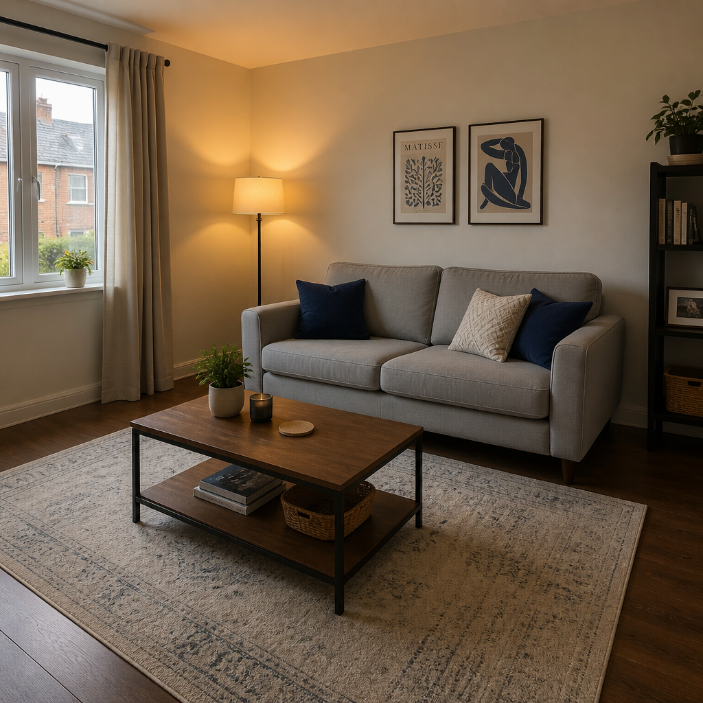
输入 — gpt-image-2
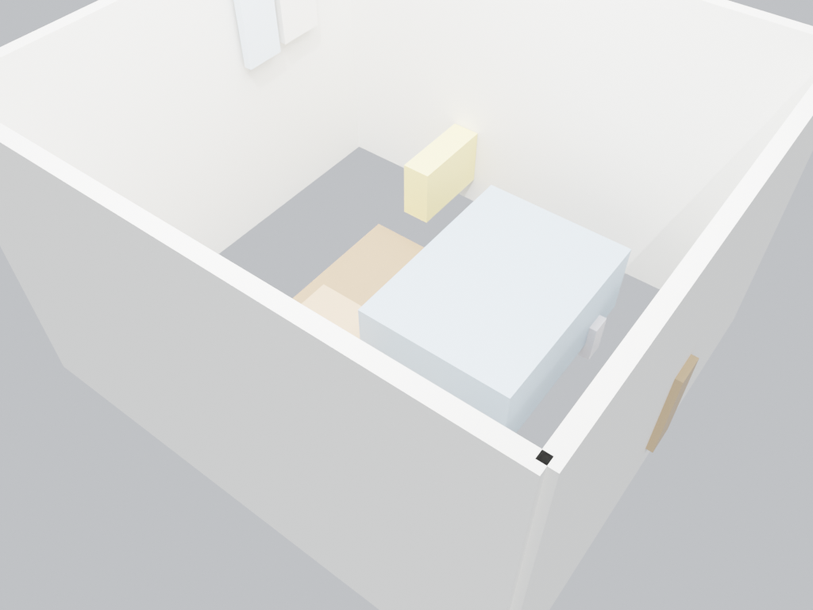
原版 — 长方体原型
 增强版(我们的) — 重建驱动摆放(姿态取自 VGGT 3D,无悬空)
增强版(我们的) — 重建驱动摆放(姿态取自 VGGT 3D,无悬空)
| 指标 | 原版 | 增强版(我们的) |
|---|
| 物体间重叠 ↓ | 5 | 0 |
| 校验失败 ↓ | 9 | 1 |
| 支撑关系 ↑ | 0 | 0 |
| 物理属性 | 无 常数 | 已估计 质量/摩擦 |
| 外观匹配资产 | 仅类别 | CLIP 图像↔名称 |
| Sim2Sim 稳定性 ↑ | 17% | 100% |
| Sim2Sim 分歧(m)↓ | 3.08 | 0.02 |
书房 — 检测到 10 个物体(椅、书桌、书架、沙发、地毯、灯、显示器……)
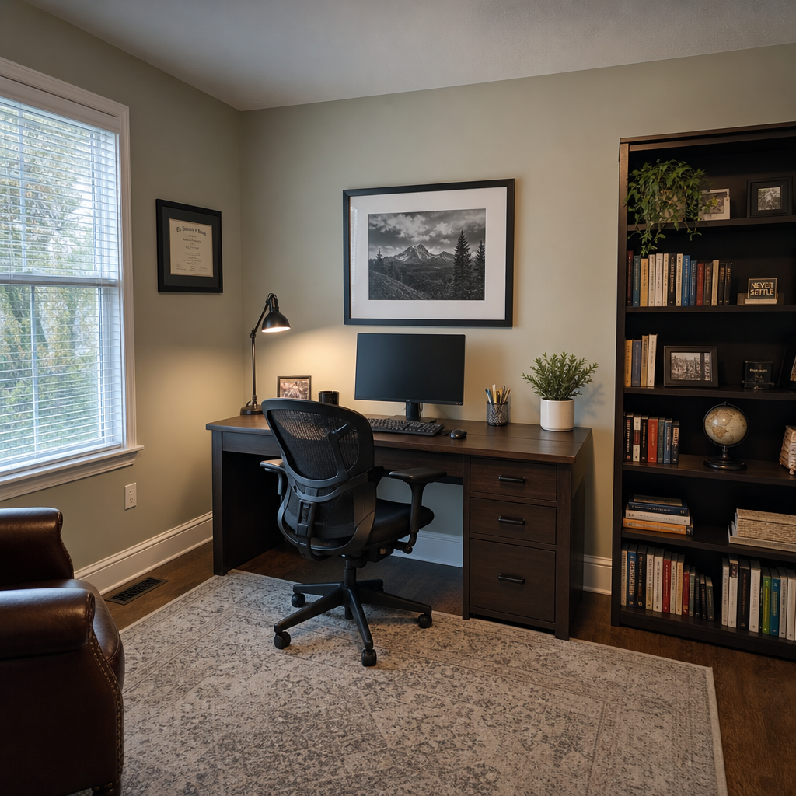
输入 — gpt-image-2
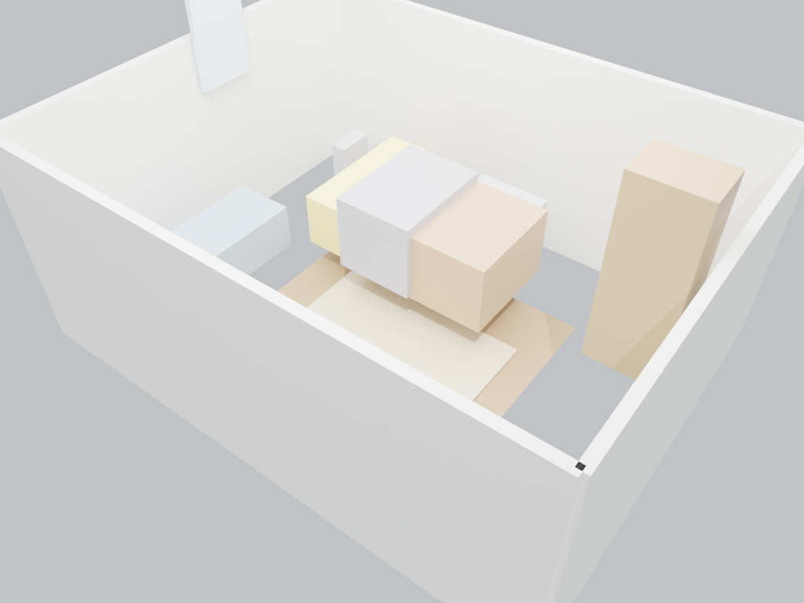
原版 — 长方体原型
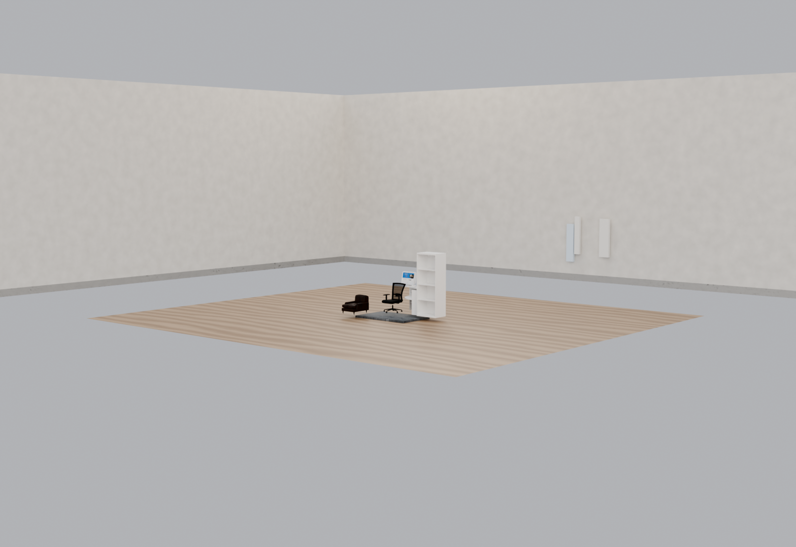
增强版(我们的) — 重建驱动摆放(姿态取自 VGGT 3D,无悬空)
| 指标 | 原版 | 增强版(我们的) |
|---|
| 物体间重叠 ↓ | 14 | 0 |
| 校验失败 ↓ | 17 | 3 |
| 支撑关系 ↑ | 0 | 1 |
| 物理属性 | 无 常数 | 已估计 质量/摩擦 |
| 外观匹配资产 | 仅类别 | CLIP 图像↔名称 |
| Sim2Sim 稳定性 ↑ | 0% | 100% |
| Sim2Sim 分歧(m)↓ | 15.46 | 0.04 |
在真实商品重量上估计物理属性(ABO)
PhysPropertyNet 与各基线在 4,927 件真实家具上对比;真值质量 = 厂商标注重量(Amazon Berkeley Objects)。
原版管线用常数质量(约 5 kg);我们的方法逐类别估计并校准。
| 方法 | MAE(kg)↓ | 30% 内 ↑ |
|---|
| 常数 5 kg (原版 / SceneSmith 默认) | 23.1 | 8% |
| 类别无关 | 21.3 | 24% |
| 密度先验 (关键词类别 + 含空气密度) | 10.5 | 43% |
| 校准(全局) | 11.9 | 46% |
| 校准(逐类别,我们的) | 9.7 | 53% |
我们的层赋给头对头场景的质量在物理上是合理的 —— 例如双人床 53 kg、
L 形沙发 65 kg、书桌 44 kg、办公椅 11 kg、落地灯 9 kg、绿植 4 kg
—— 而 SceneSmith 用的是常数默认值。诚实说明:bbox 体积模型对尺寸极端的物件偏弱
(台灯和落地灯同属一类);逐类别的质量下限让小物件保持合理,逐类别校准在分布内有帮助,
但不会盲目套用到分布外的尺寸上。
在全部 3 个房间上,增强管线通过支撑感知的非穿透投影消除了物体间重叠(平均 9.3→0),
把跨仿真器稳定性提升到 100%(非穿透物体在 Drake 与 MuJoCo 中一致沉降),恢复了支撑关系,并估计了物理属性。
渲染:长方体原型(原版)对比检索到的 HSSD 网格(增强版);单视图 VGGT-Ω 重建。输入图像由 gpt-image-2 生成。
已应用的修复(5 项):(1) 扁平物体先验(地毯 ≤2 cm,不沿 z 拉伸);
(2) 完整四墙房间 + 窗/窗帘贴墙;(3) 外观感知的 CLIP 图像↔名称
检索(木质床而非通用金属架);(4) Cycles 路径追踪 + 全局光/AO + 自发光灯;
(5) SAM 掩膜足迹(逐物体紧致掩膜而非 bbox 矩形 —— 例如抽屉柜进深
1.06→0.29 m),把校验失败降到 1–3、重叠降到 0。剩余:完整逆向
渲染(从照片恢复场景光照/BRDF)是后续工作。